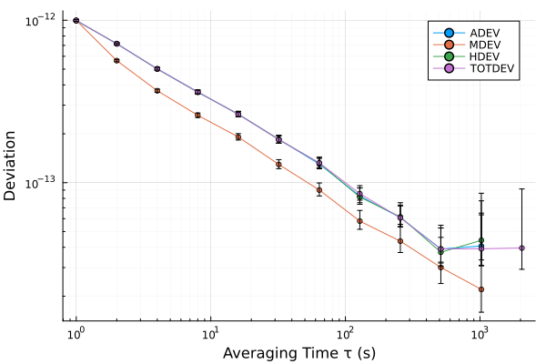

Getting started
This tutorial takes a set of samples to a stability plot and a saved result, in the Julia REPL. It uses the package and, for the plot, Plots:
pkg> add SigmaTau PlotsA record
An analysis starts from a record: the samples and the interval $τ_0$ between them, in seconds. Phase samples, in seconds, make a PhaseData, and fractional-frequency samples a FrequencyData. Here the samples are simulated, 4096 values of white frequency noise:
using SigmaTau, Random
y = 1e-12 .* randn(Xoshiro(1), 4096) # fractional frequency
f = FrequencyData(y, 1.0) # sampled every secondFrequencyData{Float64}(4096 samples, τ₀=1 s)The estimators take a record of either kind and never a bare vector, so the sample interval always travels with the data. Conventions defines phase, frequency and the other quantities used here.
A deviation
adev computes the overlapping Allan deviation:
r = adev(f)StabilityResult(:adev, 11 pts, τ∈[1, 1024] s, with CI)
tau dev neff ci_lo ci_hi edf noise
1 9.974e-13 4095 9.852e-13 1.01e-12 3205 WHFM
2 7.159e-13 4093 7.054e-13 7.27e-13 2218 WHFM
4 5.022e-13 4089 4.924e-13 5.125e-13 1259 WHFM
8 3.618e-13 4081 3.524e-13 3.72e-13 685.6 WHFM
16 2.639e-13 4065 2.546e-13 2.743e-13 360 WHFM
32 1.846e-13 4033 1.757e-13 1.95e-13 184.1 WHFM
64 1.302e-13 3969 1.216e-13 1.409e-13 93.78 WHFM
128 8.273e-14 3841 7.528e-14 9.294e-14 45.77 WHFM
256 6.095e-14 3585 5.348e-14 7.276e-14 21.78 WHFM
512 3.907e-14 3073 3.199e-14 5.471e-14 7.602 FLFM
1024 4.074e-14 2049 3.098e-14 7.73e-14 3 FLFMEach row is one averaging time $τ = mτ_0$. With no second argument the averaging factors $m$ are spaced by octaves, up to the longest the record supports. A named grid or the factors themselves can be given instead:
adev(f, Decade) # m = 1, 10, 100, 1000
adev(f, [1, 3, 10, 30, 100]) # these factorsThe result is a StabilityResult whose fields are vectors with one entry for each averaging time:
r.tau[1], r.dev[1], r.noise_type[1], r.ci[1](1.0, 9.973878681964676e-13, :WHFM, (lo = 9.851522813919588e-13, hi = 1.010090698707103e-12))noise_type is the noise the package identified at that averaging time, here white FM, and ci is the confidence interval that follows from it, at 68.3 % by default. Both can be set in the call:
adev(f, [1, 10, 100]; confidence = 0.95, noise = :WHFM)StabilityResult(:adev, 3 pts, τ∈[1, 100] s, with CI)
tau dev neff ci_lo ci_hi edf noise
1 9.974e-13 4095 9.736e-13 1.022e-12 3205 WHFM
10 3.247e-13 4077 3.067e-13 3.449e-13 559.2 WHFM
100 9.821e-14 3897 8.327e-14 1.197e-13 59.21 WHFMNoise identification and Confidence intervals explain how the two columns are obtained and how far to trust them. ci=false leaves both out.
Every other estimator is called the same way: mdev, hdev, totdev and the rest of the estimator reference. Choosing an estimator says which to use when.
Several deviations
stability runs a set of estimators on one record and returns a StabilitySuite, indexed by name:
suite = stability(f; devs = (:adev, :mdev, :hdev, :totdev))
suite[:mdev].dev[1:3]3-element Vector{Float64}:
9.973878681964349e-13
5.639295772742911e-13
3.6805351563770916e-13A plot
Loading Plots turns on the plot recipes. A result or a suite plots on logarithmic axes with its confidence intervals:
using Plots
plot(suite)
All four fall as $τ^{-1/2}$, the slope of white FM (Power-law noise). Plotting and tables has the other plots: bands, several clocks on one axis, spectra and dynamic stability.
Saving
save writes a record, a result or a suite as text that any program can read, and load reads it back:
file = joinpath(mktempdir(), "adev.tsv")
save(file, r)
load(file).dev == r.devtrueA file of your own
read_phase and read_frequency read columns of text, and read_data reads the files of instruments and of other programs:
p = read_phase("clock.txt") # time and phase columns
p = read_phase("clock.txt"; value_col = 3, scaling = 1e-9) # nanoseconds
p = read_data("clock.tim") # a TimeLab fileReading and saving data goes through the readers, and Gaps, outliers and drift through the checks a measured record needs before its deviations mean anything.
Next
- A drifting clock and the Hadamard family shows what drift does to the Allan deviation and what to use instead.
- Choosing an estimator maps the question asked of a record onto an estimator.
- The explorer does the same analysis without code.